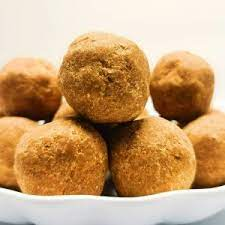

Donkwa is a savory Nigerian snack that is made with cornmeal & groundnuts (also known as peanuts). It may also have additional ingredients added to it (e.g., dates). These snacks leave one with a delicious & savory yet very affordable price. ORDER NOW!
Planters Heat
With an irresistible crunchy texture, satisfying taste, Planters Heat Peanuts are cooked without oil. Seasoned with a touch of sea salt, these nuts are lower in sodium but not flavor, making them a great way to fulfill your cravings for a salty snack without the guilt. These oil roasted peanuts deliver the heat you seek and help curb hunger for substantial snacking. ORDER NOW!
Cajun
Cajun peanuts are made by coating roasted or fried peanuts with a blend of spices commonly used in Cajun cooking. These spices typically include paprika, garlic powder, onion powder, cayenne pepper, and other seasonings that vary depending on the recipe. The peanuts are then roasted or fried to give them a crunchy texture and to help the spices adhere to the surface of the nut. ORDER NOW!